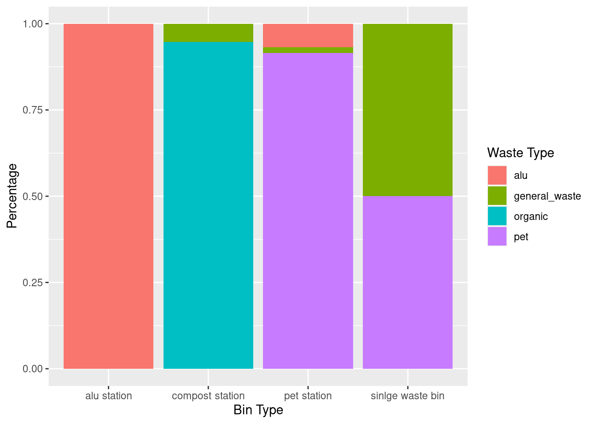
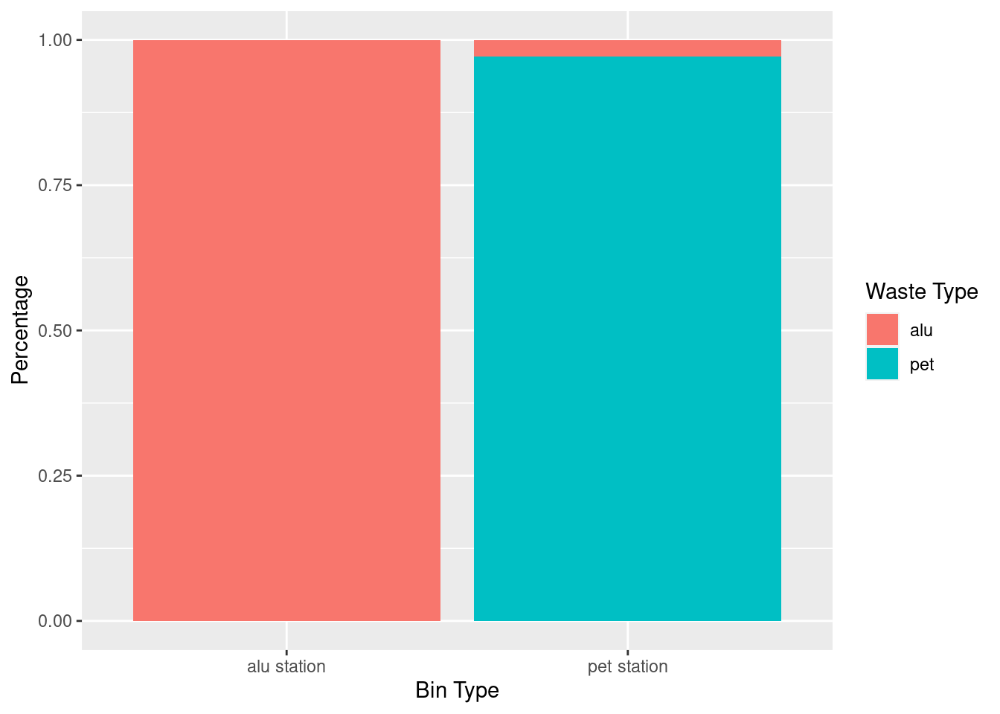

![]()
library(ggplot2)
library(ggridges)
library(ggthemes)
library(knitr)
library(dplyr)How well do students recycle at ETH Campus Hönggerberg
Abstract
This study examines the effectiveness of recycling stations at ETH Campus Hönggerberg by analyzing incorrectly deposited waste at recycling stations and individual waste bins. Findings indicate that students recycle properly when recycling stations are available, but not with single waste bins. Recommendations to improve recycling include installing more recycling stations, eliminating single waste bins, and placing signs to guide students to the nearest recycling stations.
Introduction
Solid waste management is a major global challenge. One component of solid waste management is recycling (Kassim, 2012). To be successful, this requires the participation of the government, residents, businesses and other institutions, including ETH Zurich. For students to recycle properly, the necessary infrastructure must be in place. This study examines the effectiveness of the recycling stations at ETH Hönggerberg by collecting data on the amount of incorrectly deposited waste at recycling stations and individual waste bins at ETH Campus Hönggerberg.
Methods
To collect the data, the waste of two recycling stations and two single waste bins was collected and sorted. The recycling stations included a pet, aluminium, compost, and general waste compartment. The waste was sorted into pet, aluminium, glass, compost, paper, and general waste. To determine the amount of waste, the portions of the different waste categories were weighed. As there was still some liquid in the pet bottles and aluminium cans, the amount of pet bottles and aluminium cans was not well represented by the weight. Therefore, in order to better represent the amount of bottles and cans in the aluminium and pet stations, the number of bottles and cans was counted as well.
The data was collected between 8:00 am and 9:00 am on a Tuesday after a bank holiday. As a result, some of the waste stations and waste bins were empty or had only little content. The spreadsheet was organized based on the paper Data Organization in Spreadsheets by Broman et al. (Broman & Woo, 2018).
Results
table_alu <- read.csv(here::here("data/final/table_alu.csv"))
table_pet <- read.csv(here::here("data/final/table_pet.csv"))
figure_overview <- read.csv(here::here("data/final/figure_overview.csv"))
figure_pet_alu <- read.csv(here::here("data/final/figure_pet_alu.csv"))Figure 1 gives an overview of how well students at the ETH Campus Hönggerberg recycle. The graph clearly shows that at recycling stations only very little waste is deposited incorrectly, whereas at the single waste bin, half of the waste is deposited incorrectly.
ggplot(data = figure_overview,
mapping = aes(x = bin_type,
y = percentage,
fill = waste_type)) +
geom_bar(position="stack",
stat="identity")+
labs(x = "Bin Type",
y = "Percentage",
title = NULL #no title because already in the figure caption)
)+
scale_fill_discrete(name = "Waste Type",
labels = c("Aluminium", "General Waste", " Organic", "Pet"))

As mentioned above, the number of bottles and cans was also recorded. Figure 2 shows the number of pet bottles and aluminium cans correctly and incorrectly deposited at the recycling stations based.
ggplot(data = figure_pet_alu,
mapping = aes(x = bin_type,
y = percentage,
fill = waste_type)) +
geom_bar(position="stack",
stat="identity")+
labs(x = "Bin Type",
y = "Percentage",
title = NULL #no title because there is already figure caption
) +
scale_fill_discrete(name = "Waste Type",
labels = c("Aluminium", "Pet"))

Table 1 and Table 2 show the amount of pet bottles placed in the recycling bins and the percentage of misplaced items. The numbers show that in general more alu cans are deposited at the recycling stations than pet bottles. Figure 2 and the tables indicate that students recycle pet and aluminium very well at recycling stations. The few incorrectly deposited pet bottles could be due to the pet bin and aluminium bin having similar shapes.
table_alu |>
kable(full_width = F,
col.names = c("id","location", "number of alu cans", "number of pet bottles", "percentage false waste [%]"))| id | location | number of alu cans | number of pet bottles | percentage false waste [%] |
|---|---|---|---|---|
| 1 | HPS | 120 | 0 | 0 |
| 2 | HPV | 26 | 0 | 0 |
table_pet |>
kable(full_width = F,
col.names = c("id","location", "number of alu cans", "number of pet bottles", "percentage false waste [%]"),
digits = c(2))| id | location | number of alu cans | number of pet bottles | percentage false waste [%] |
|---|---|---|---|---|
| 1 | HPS | 2 | 45 | 4.26 |
| 2 | HPV | 0 | 22 | 0.00 |
Conclusions
Students at the ETH Campus Hönggerberg recycle aluminium, pet and compost properly if there is a recycling station available.
Students at ETH Campus Hönggerberg don’t recycle properly, if there is only a single waste bin available. This assumption is supported by a study (Kelly et al., 2006), in which 83% of the students interviewed at Massey University in New Zealand stated that they would recycle more often if there were more bins on campus.
Therefore one way to improve recycling would be to install more recycling stations, perhaps to the point where there are no single waste bins around anymore. Another approach would be to remove the single waste bins. Maybe students would be willing to walk further to dispose of their waste instead of litterin, though this would have to be further investigated.
Another way to improve recycling could be to put up signs at single waste bins with the location of the nearest recycling station. If students knew the location of the nearest recylcing station, they may be willing to walk a few extra steps, instead of throwing away their waste into the wrong bins. This too would be worth to investigate further.
References
Broman, K. W., & Woo, K. H. (2018). Data Organization in Spreadsheets. The American Statistician, 72(1), 2–10. https://doi.org/10.1080/00031305.2017.1375989
Kassim, S. M. (2012). The Importance of Recycling in Solid Waste Management. Macromolecular Symposia, 320(1), 43–50. https://doi.org/10.1002/masy.201251005
Kelly, T. C., Mason, I. G., Leiss, M. W., & Ganesh, S. (2006). University community responses to on-campus resource recycling. Resources, Conservation and Recycling, 47(1), 42–55. https://doi.org/10.1016/j.resconrec.2005.10.002
Reuse
Citation
BibTeX citation:
@online{kappeler2024,
author = {Kappeler, Fabienne},
title = {How Well Do Students Recycle at {ETH} {Campus} {Hönggerberg}},
date = {2024-06-06},
url = {https://www.example.com},
langid = {en},
abstract = {This study examines the effectiveness of recycling
stations at ETH Campus Hönggerberg by analyzing incorrectly
deposited waste at recycling stations and individual waste bins.
Findings indicate that students recycle properly when recycling
stations are available, but not with single waste bins.
Recommendations to improve recycling include installing more
recycling stations, eliminating single waste bins, and placing signs
to guide students to the nearest recycling stations.}
}
For attribution, please cite this work as:
Kappeler, F. (2024, June 6). How well do students recycle at ETH
Campus Hönggerberg. My Blog. https://www.example.com